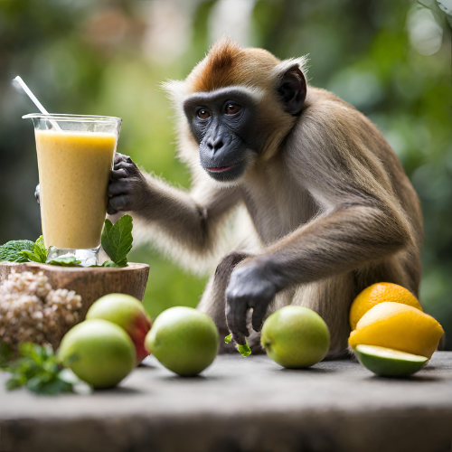

Return to home page
Magic Smoothie

Description
The magic smoothie is roughly the equivalent for a vitality potion. Containing all of your necessary daily nutrients
into a single cup, this is the Lembas Bread of drinks. Prepare it once in the morning, drink it up, and go seize the day.
Ingredients
- 1 banana, chosen with care;
- 1 handful of spinnach leaves;
- 1 handful of raspberries
- 1 glass of milk. Almond milk works just fine for those who don't enjoy cows;
- 1 tablespoon of peanut butter.
Instructions
- Peel the banana.
- Put it in a blender.
- Grab all the remaining ingredients.
- Put them in the blender.
- Grab whatever else edible thing you fancy.
- Consider if it will improve the taste of the smoothie somehow.
- If the answer is no, put it back where it was and repeat step 5. If the answer is yes, you guessed it, put it in the blender.
- Blend everything.
- Consider the texture. Too liquid? Add bananas. Too solid? Add milk.
- Serve cold, in a cup.
- Profit.
Back to the top of the page.